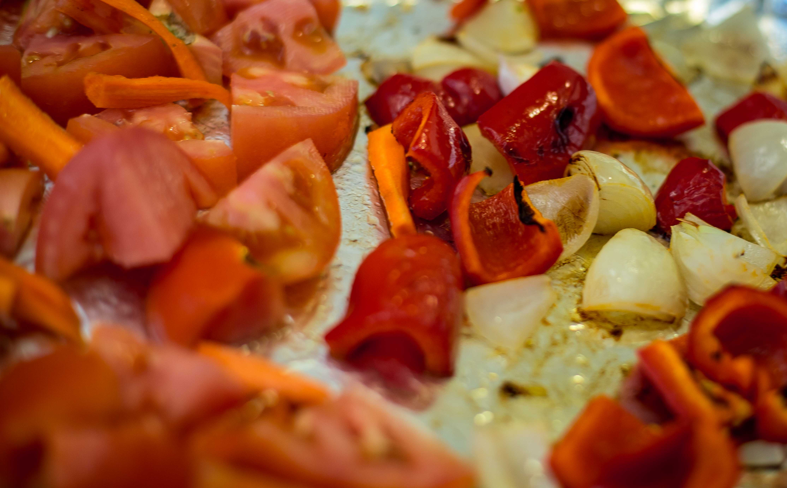

Soups have a special place in my heart. On a rainy evening, there can be nothing better than a hot bowl of soup. It has magical powers to transform a plain sandwich into a fancy and filling meal. A soup sandwich combo is my go-to on busy weekdays and lazy weekends alike. I have grown up drinking delicious tomato soup - with my mother's recipe taking the prize. In my version however, i use red peppers and carrots along with the standard onions and tomatoes and roast everything before blending into a decadent soup. Flavored using simple spices, this soup is easy, quick and really flavorful. Hits all the right spots!
- One red pepper
- One onion
- One carrot
- Two tomatoes
- Tomato paste, 2 tsp
- Olive oil
- Butter, optional
- Cumin
- Black pepper, freshly ground
- Salt, to taste
Instructions
Preheat your oven to 350 degrees.
Cut the pepper and onion to roughly equal pieces.
Place the pieces in the baking tray and drizzle with olive oil.
The pepper and onion need to be roasted for a longer time as compared to the other vegetables so they go in the oven first.
Roast for about 10 minutes or till the onion and pepper begin to char.
Do not be afraid of the vegetables turning black - the char gives an authentic flavor to the dish.
Chop the tomatoes and the carrot. The garlic can be roasted with the peel on.
Add the tomatoes, carrot and garlic cloves to the baking tray.

Roast the vegetables for 10-15 minutes or until the tomatoes turn mushy.
When cooking in the oven, always keep an eye on the food and do not just rely on times specified in the recipes. Each oven is different - get to know yours.
Transfer the roasted vegetables to your blender cup.
Blend the vegetables to your desired thickness.
In a pan, heat a tsp of oil and butter.
the oil prevents the butter from burning.
Add cumin seeds and infuse the butter with flavors.
The pureed/blended vegetables go in.

Add two-four teaspoons of tomato paste.
Use water to bring the soup to your desired consistency.
i run my blender cup under the water to get out every last bit!
Mix in freshly ground black pepper and salt to taste.
Enjoy with boiled eggs, sandwiches or by itself!